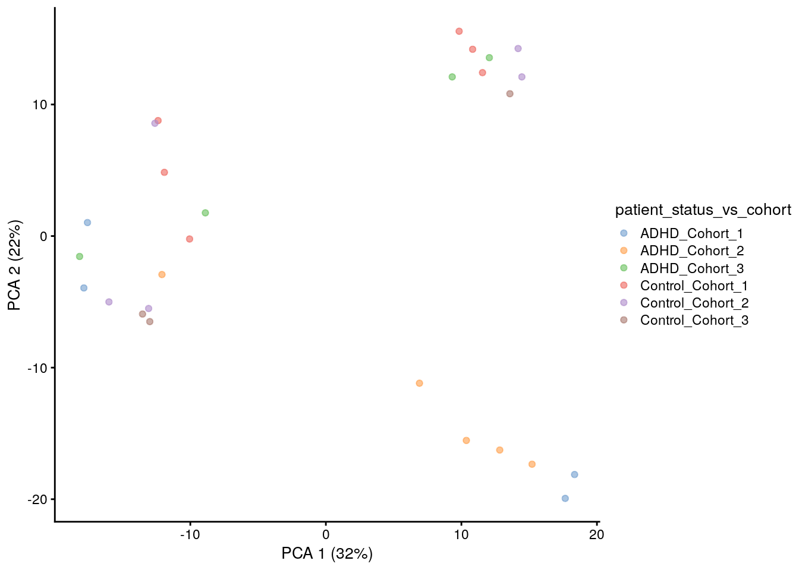

8 Beta diversity demo
8.1 Visualizations
Lets generate ordination plots with different methods and transformations.
#### calculating Bray Curtis dissimilarity and PCoA
tse <- transformSamples(tse, method = "relabundance")
tse <- runMDS(tse, FUN = vegan::vegdist, method = "bray", name = "PCoA_BC", exprs_values = "relabundance")
p <- plotReducedDim(tse, "PCoA_BC", colour_by = "patient_status")
# Add explained variance for each axis
e <- attr(reducedDim(tse, "PCoA_BC"), "eig");
rel_eig <- e/sum(e[e>0])
p <- p + labs(x = paste("PCoA 1 (", round(100 * rel_eig[[1]],1), "%", ")", sep = ""),
y = paste("PCoA 2 (", round(100 * rel_eig[[2]],1), "%", ")", sep = ""))
print(p)
#### Aitchinson distances and PCA
tse <- transformSamples(tse, method = "clr", pseudocount = 1)## Warning: All the total abundances of samples do not sum-up to a fixed constant.
## Please consider to apply, e.g., relative transformation in prior to CLR
## transformation.tse <- runMDS(tse, FUN = vegan::vegdist, name = "MDS_euclidean",
method = "euclidean", exprs_values = "clr")
p <- plotReducedDim(tse, "MDS_euclidean", colour_by = "patient_status_vs_cohort")
# Add explained variance for each axis
e <- attr(reducedDim(tse, "MDS_euclidean"), "eig");
rel_eig <- e/sum(e[e>0])
p <- p + labs(x = paste("Axis 1 (", round(100 * rel_eig[[1]],1), "%", ")", sep = ""),
y = paste("Axis 2 (", round(100 * rel_eig[[2]],1), "%", ")", sep = ""))
print(p)
PCA is a subtype of MDS with Euclidean distances, below is a different alternative for running the same analysis.
# alternative method
tse <- runPCA(tse, name = "PCA", exprs_values = "clr", ncomponents = 10)
plotReducedDim(tse, "PCA", colour_by = "patient_status_vs_cohort")
One can use also ggplot for ordination plots for the flexible adaptablity.
dis <- vegan::vegdist(t(assays(tse)$counts), method = "jaccard")
# principal coordinate analysis
jaccard_pcoa <- ecodist::pco(dis)
# a data frame from principal coordinates and groupng variable
jaccard_pcoa_df <- data.frame(pcoa1 = jaccard_pcoa$vectors[,1],
pcoa2 = jaccard_pcoa$vectors[,2],
patient_status_vs_cohort = colData(tse)$patient_status_vs_cohort)
# plot
jaccard_plot <- ggplot(data = jaccard_pcoa_df, aes(x=pcoa1, y=pcoa2, color = patient_status_vs_cohort)) +
geom_point() +
labs(x = paste("Axis 1 (", round(100 * jaccard_pcoa$values[[1]] / sum(jaccard_pcoa$values), 1), "%", ")", sep = ""),
y = paste("Axis 2 (", round(100 * jaccard_pcoa$values[[2]] / sum(jaccard_pcoa$values), 1), "%", ")", sep = ""),
title = "Jaccard PCoA") +
theme(title = element_text(size = 12)) +
theme_light()
jaccard_plot
8.2 Hypothesis testing
PERMANOVA with the function adonis is most commonly used to detect differences in multivariate data. adonis function was recently updated with slightly different functionality. Now the adonis2 allows independent analysis of terms.
variable_names <- c("patient_status", "cohort")
tse_genus <- agglomerateByRank(tse, "Genus")## Warning: 'clr' includes negative values.
## Agglomeration of it might lead to meaningless values.
## Check the assay, and consider doing transformation again manually with agglomerated data.# Apply relative transform
tse_genus <- transformSamples(tse_genus, method = "relabundance")
set.seed(12346)
# We choose 99 random permutations for speed. Consider applying more (999 or 9999)
assay <- t(assay(tse_genus,"relabundance"))
mod <- paste("assay ~", paste(variable_names, collapse="+")) %>% as.formula()
permanova2 <- vegan::adonis2(mod,
by = "margin", # each term analyzed individually
data = colData(tse),
method = "bray",
permutations = 99)
print(permanova2)## Permutation test for adonis under reduced model
## Marginal effects of terms
## Permutation: free
## Number of permutations: 99
##
## vegan::adonis2(formula = mod, data = colData(tse), permutations = 99, method = "bray", by = "margin")
## Df SumOfSqs R2 F Pr(>F)
## patient_status 1 0.1885 0.05817 1.490 0.23
## cohort 2 0.1450 0.04474 0.573 0.75
## Residual 23 2.9104 0.89787
## Total 26 3.2414 1.00000# older adonis for reference
permanova <- vegan::adonis(mod,
#by = "margin", # each term analyzed sequentially
data = colData(tse),
method = "bray",
permutations = 99)## 'adonis' will be deprecated: use 'adonis2' insteadpermanova$aov.tab## Permutation: free
## Number of permutations: 99
##
## Terms added sequentially (first to last)
##
## Df SumsOfSqs MeanSqs F.Model R2 Pr(>F)
## patient_status 1 0.1860 0.186024 1.47011 0.05739 0.22
## cohort 2 0.1450 0.072503 0.57298 0.04474 0.79
## Residuals 23 2.9104 0.126537 0.89787
## Total 26 3.2414 1.00000With older adonis version one cam calculate top coefficients driving the differences between groups.
# older adonis supplies the coefficients
coef <- coefficients(permanova)["cohort1",]
top.coef <- sort(head(coef[rev(order(abs(coef)))],20))
# plot
top_taxa_coeffient_plot <- ggplot(data.frame(x = top.coef,
y = factor(names(top.coef),
unique(names(top.coef)))),
aes(x = x, y = y)) +
geom_bar(stat="identity") +
labs(x="", y="", title="Top Taxa") +
theme_bw()
top_taxa_coeffient_plot
8.2.1 Testing the differences in dispersion
PEMRANOVA doesn’t differentiate between different within-group variation, i.e. dispersion, or the mean differences between groups, i.e. the location of the centroid. Follow-up testing can be done with PERMDISP2 implemented in the vegan package.
dis <- vegan::vegdist(t(assays(tse)$counts), method = "bray")
b <- vegan::betadisper(dis, colData(tse)$cohort)
print(anova(b))## Analysis of Variance Table
##
## Response: Distances
## Df Sum Sq Mean Sq F value Pr(>F)
## Groups 2 0.000375 0.0001875 0.0166 0.9835
## Residuals 24 0.270795 0.0112831# boxplor for distances to centroid
p <- cbind(distance = as.numeric(b$distances),
cohort = colData(tse)$cohort) %>%
as_tibble() %>%
mutate(distance = as.numeric(distance)) %>%
ggplot(aes(cohort, distance)) +
geom_boxplot() +
theme_light()
print(p)
End of the demo.
8.3 Exercises
Do “Beta diversity” from the exercises.